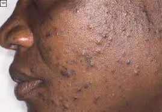
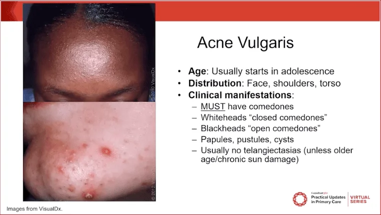
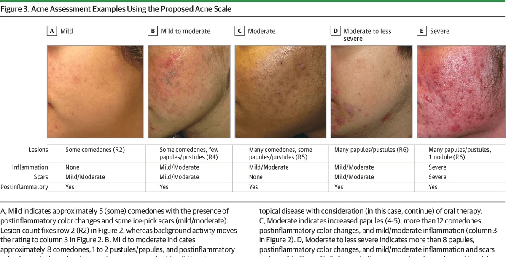
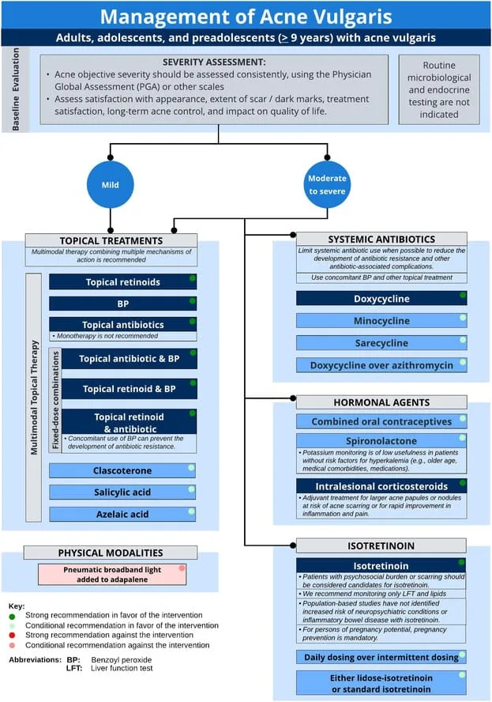

Expanded Nursing Uganda Explanation
Acne vulgaris should be understood beyond a short definition. Link the concept to patient history, focused assessment, common risks, nursing priorities, documentation and evaluation of outcomes.
01 Overview
Acne Vulgaris is an inflammatory skin disease caused by changes in the pilosebaceous units (skin structures comprising a hair follicle and its related sebaceous gland) of the skin.
The term acne comes from a Greek word acme meaning a skin eruption .
Acne vulgaris is the most common cutaneous disorder affecting adolescents and young adults. Patients with acne can experience significant psychological morbidity and, rarely, mortality due to suicide.
The psychological effects of embarrassment and anxiety can impact the social lives and employment of affected individuals. Scars can be disfiguring and lifelong.
Acne Vulgaris is a common, chronic inflammatory skin condition affecting the pilosebaceous unit (hair follicle and its associated sebaceous gland). It is characterized by the presence of polymorphic lesions, including comedones (blackheads and whiteheads), papules, pustules, nodules, and cysts, primarily on the face, neck, chest, and back.
- Chronic: It is a long-lasting condition that often requires ongoing management, with periods of exacerbation and remission.
- Inflammatory: While non-inflammatory lesions (comedones) are primary, inflammation is a key component, leading to the more visible and painful lesions.
- Affects the Pilosebaceous Unit: This is the anatomical target. The dysfunction of this unit is central to the disease.
- Polymorphic Lesions: Meaning multiple types of lesions can be present simultaneously in the same individual.
Acne vulgaris is one of the most widespread skin disorders globally, affecting millions of people at some point in their lives.
- Adolescence: It is overwhelmingly prevalent in adolescents, affecting an estimated 85-100% of individuals between the ages of 12 and 24 years. It often begins around puberty.
- Adults: While traditionally associated with adolescence, acne can persist into adulthood (adult-onset acne) or even begin in adulthood. Approximately 8% of individuals aged 35-44 years and 3% of individuals aged 45-54 years still experience acne. Adult female acne, in particular, is a recognized and common phenomenon.
- Begins during puberty , driven by hormonal changes (androgen surge).
- Can occur earlier in prepubescent children (prepubertal acne) or even in infants (infantile acne) and neonates (neonatal acne), though these often have distinct underlying causes and presentations.
- In adolescence , acne affects both males and females, though severe nodulocystic acne may be more common in males.
- In adulthood , adult-onset and persistent acne are more common in females , often linked to hormonal fluctuations (e.g., menstrual cycle, pregnancy, polycystic ovary syndrome - PCOS).
Acne vulgaris presents with a variety of lesions, often appearing simultaneously (polymorphic lesions) on characteristic body areas. The specific types of lesions present are important for classifying acne severity and determining the most appropriate treatment.
Acne lesions are broadly categorized into non-inflammatory and inflammatory types.
These are the primary lesions of acne and represent the initial blockage of the pilosebaceous unit.
- Open Comedones (Blackheads): Appearance: Small, flat, dark or blackish papules. The dark color is not dirt, but rather oxidized sebum and compacted keratinocytes within the dilated follicular opening.
- Mechanism: The follicular orifice is dilated, allowing for exposure of the sebaceous material to air, leading to oxidation and the characteristic dark color.
- Significance: Indicative of follicular hyperkeratinization and sebum accumulation.
- Closed Comedones (Whiteheads): Appearance: Small, flesh-colored or whitish, slightly raised papules. They lack a visible opening to the skin surface.
- Mechanism: The follicular opening is completely blocked, trapping sebum and keratinocytes beneath the skin surface.
- Significance: These are often precursors to inflammatory lesions, as the trapped material can easily lead to rupture and inflammation.
These lesions develop when the follicular wall ruptures, releasing sebum, keratinocytes, and C. acnes into the surrounding dermis, triggering an immune response.
- Papules: Appearance: Small, tender, red bumps (typically <5 mm in diameter) that are elevated above the skin surface.
- Mechanism: Represent early, superficial inflammation around a ruptured microcomedone.
- Significance: Indicate an inflammatory reaction, often painful to the touch.
- Pustules: Appearance: Red, tender bumps with a visible white or yellowish center of pus.
- Mechanism: Similar to papules, but with a more pronounced inflammatory response involving neutrophils, leading to the formation of purulent material.
- Significance: Clearly indicate bacterial involvement and significant inflammation.
- Nodules (Nodular Acne): Appearance: Larger (>5 mm), firm, tender, erythematous (red) lesions that extend deeper into the dermis. They lack a central pore.
- Mechanism: Result from a more extensive and deeper rupture of the follicular wall, leading to a profound inflammatory reaction.
- Significance: More painful, more prone to scarring, and represent a more severe form of inflammatory acne.
- Cysts (Cystic Acne / Nodulocystic Acne): Appearance: Large, deep, fluctuating, often painful, pus-filled lesions. They can feel soft and compressible.
- Mechanism: Often described as a severe form of nodular acne where large, interconnected, fluid-filled lesions form beneath the skin. Can be a result of multiple follicular ruptures coalescing.
- Significance: The most severe form of acne lesions, almost always leading to significant scarring and requiring aggressive treatment.
Acne lesions typically appear in areas with a high density of sebaceous glands and hair follicles.
- Face: Forehead, nose, cheeks, chin (most common site).
- Neck: Especially the back of the neck or along the jawline.
- Chest: Upper chest, sternum area.
- Back: Upper back and shoulders (can be extensive and severe).
Beyond the active lesions, acne can leave behind persistent marks and permanent scarring, which often cause significant distress.
- Post-Inflammatory Hyperpigmentation (PIH): Appearance: Flat, dark spots (brown, grey, or black) left after an inflammatory lesion has healed.
- Mechanism: Inflammation triggers melanocytes to produce excess melanin.
- Significance: More common and often more prominent in individuals with darker skin tones; can fade over months to years but is a major cosmetic concern.
- Post-Inflammatory Erythema (PIE): Appearance: Flat, reddish-purple spots that remain after inflammatory lesions have healed.
- Mechanism: Residual dilation or damage to superficial blood vessels following inflammation.
- Significance: Can be persistent and is often more noticeable in lighter skin types.
- Scarring: Permanent textural changes in the skin resulting from significant damage to the dermis during the healing of inflammatory lesions, particularly nodules and cysts. Atrophic Scars: Depressed scars where tissue has been lost. Icepick Scars: Small, deep, narrow, V-shaped pits (resemble a puncture from an icepick).
- Boxcar Scars: Wider, U-shaped depressions with sharp, defined vertical edges (like chickenpox scars).
- Rolling Scars: Broad depressions with sloping edges, giving the skin a wavy or "rolling" appearance.
- Hypertrophic Scars: Raised, firm scars that remain within the boundaries of the original wound.
- Keloidal Scars: Raised, firm scars that extend beyond the boundaries of the original wound and can continue to grow. More common in individuals with a genetic predisposition and darker skin types.
Classifying and assessing acne severity involves considering the types, number, and extent of lesions, as well as the presence of sequelae like scarring, and critically, the psychosocial impact on the patient. While there are various grading systems, most clinical practice relies on a simpler mild, moderate, severe categorization.
Acne can be broadly classified based on the predominant lesion type:
- Comedonal Acne: Predominant Lesions: Primarily open and closed comedones.
- Inflammation: Minimal to no inflammatory lesions (papules, pustules).
- Severity: Typically considered a mild form of acne.
- Papulopustular Acne: Predominant Lesions: A mixture of comedones with a significant number of papules and pustules.
- Inflammation: Moderate inflammation is evident.
- Severity: Can range from mild to moderate , depending on the number and extent of lesions.
- Nodulocystic (or Severe Papulopustular) Acne: Predominant Lesions: Presence of numerous comedones, papules, pustules, and critically, deep-seated inflammatory nodules and/or cysts.
- Inflammation: Severe, extensive inflammation.
- Severity: Always considered severe acne, with a high risk of scarring.
While formal grading scales exist (e.g., Global Acne Severity Scale, Leeds Acne Grading System), in daily clinical practice, a simpler categorization is often used, often incorporating both objective lesion count and subjective impact.
- Mild Acne: Lesions: Few to several comedones (open and closed), and possibly a few scattered papules or pustules.
- Extent: Usually localized to one area (e.g., face only).
- Impact: Minor or no significant psychosocial impact.
- Scarring: Little to no risk of scarring.
- Moderate Acne: Lesions: Numerous comedones, and several to many papules and pustules. May have occasional small nodules.
- Extent: Involvement of face and potentially the upper trunk (chest/back).
- Impact: Moderate psychosocial impact, some distress or self-consciousness.
- Scarring: Moderate risk of post-inflammatory hyperpigmentation and some superficial scarring.
- Severe Acne: Lesions: Numerous and extensive comedones, papules, and pustules, with multiple large, painful, deep-seated nodules and/or cysts. May include confluent lesions.
- Extent: Widespread involvement of the face and significant areas of the trunk.
- Impact: Significant psychosocial distress, anxiety, depression, and impaired quality of life.
- Scarring: High risk of significant and permanent scarring (atrophic, hypertrophic, keloidal) and post-inflammatory hyperpigmentation/erythema.
- Extent of Involvement: Is it localized to the face, or also affecting the chest and back? Widespread involvement indicates higher severity.
- Presence of Nodules/Cysts: The presence of even a few nodules or cysts immediately elevates acne to at least moderate, and often severe, due to their higher inflammatory potential and risk of scarring.
- Risk of Scarring: Any patient with nodular/cystic lesions or with a history of scarring is considered to have more severe acne, regardless of the exact lesion count.
- History of Treatment Response: Acne that has been recalcitrant to previous treatments is considered more severe.
- Psychosocial Impact: This is a critical factor. A patient with objectively mild acne but significant emotional distress (e.g., anxiety, depression, social withdrawal, body image issues) due to their skin condition should be treated more aggressively, often as if they had moderate or severe acne. The DLQI (Dermatology Life Quality Index) can be a useful tool here.
- Associated Features: Conditions like Acne Fulminans (acute onset, severe nodulocystic acne with systemic symptoms like fever and joint pain) or Acne Conglobata (interconnecting abscesses, cysts, and sinuses) represent highly severe forms.
- Treatment Selection: Severity directly guides the choice of treatment (e.g., topical for mild, systemic for moderate-to-severe, isotretinoin for severe or recalcitrant acne).
- Monitoring Progress: Regular severity assessment allows clinicians to evaluate the effectiveness of treatment and make necessary adjustments.
- Patient Education: Helps patients understand their condition and the rationale behind the chosen treatment plan.
- Psychosocial Consideration: Emphasizes that acne is more than just a cosmetic concern and that quality of life is an important treatment goal.
The term "acneiform eruption" is often used to describe conditions that resemble acne but have different underlying causes and require distinct treatments. A thorough patient history and physical examination are essential to differentiate acne vulgaris from its mimics.
Here are some common dermatological conditions that can mimic acne vulgaris:
- Rosacea: Key Differentiating Features: No Comedones: This is a hallmark difference from acne vulgaris.
- Age of Onset: Typically appears in adulthood (30s-50s), whereas acne usually starts in adolescence.
- Lesions: Characterized by persistent facial erythema (redness), papules, and pustules. Telangiectasias (visible blood vessels) are common.
- Location: Predominantly central face (cheeks, nose, forehead, chin).
- Triggers: Flares can be triggered by heat, spicy foods, alcohol, sunlight, stress.
- Subtypes: Ocular rosacea (eye involvement), phymatous rosacea (tissue hypertrophy, e.g., rhinophyma).
- Perioral Dermatitis (or Peri-orifice Dermatitis): Key Differentiating Features: No Comedones: Similar to rosacea.
- Lesions: Small, erythematous papules and pustules, often with some scaling.
- Location: Classically spares the vermilion border (area immediately around the lips), forming a band of affected skin. Can also affect perinasal and periorbital areas.
- History: Often associated with prior or current use of topical corticosteroids on the face.
- Folliculitis (Bacterial, Fungal - Pityrosporum/Malassezia, Demodex): Key Differentiating Features: No Comedones: Typically pustules or papules centered around hair follicles.
- Etiology: Bacterial Folliculitis: Usually Staphylococcus aureus . Presents as papules/pustules with central hair. Can occur anywhere, but common in beard area (Pseudofolliculitis Barbae is related to shaving, not true folliculitis) or scalp.
- Pityrosporum (Malassezia) Folliculitis: Caused by yeast ( Malassezia furfur or P. ovale ). Presents as pruritic (itchy), monomorphic (similar-looking) papules and pustules. Common on chest, back, and sometimes forehead/jawline. Often resistant to standard acne treatments.
- Demodex Folliculitis: Overgrowth of Demodex mites. Can resemble rosacea or folliculitis.
- Symptoms: Often itchy, whereas acne is typically not.
- Drug-Induced Acne (Acneiform Eruption): Key Differentiating Features: History: Clear temporal relationship with the initiation of a new medication.
- Lesions: Often monomorphic (all lesions look similar), typically papules and pustules without comedones.
- Onset: Can be sudden.
- Common Culprits: Corticosteroids (oral or high-potency topical), androgens, lithium, isoniazid, antiepileptics (phenytoin, carbamazepine), epidermal growth factor receptor (EGFR) inhibitors.
- Miliaria (Heat Rash): Key Differentiating Features: Cause: Obstruction of sweat ducts, not hair follicles.
- Appearance: Small, clear vesicles (miliaria crystallina), red papules (miliaria rubra), or pustules (miliaria pustulosa).
- Context: Occurs in hot, humid environments, often in skin folds.
- Keratosis Pilaris: Key Differentiating Features: Appearance: Small, rough, follicular papules, often with a central keratotic plug (feels like sandpaper). Can be red or skin-colored.
- Location: Classically on the posterior upper arms, thighs, and buttocks. Face involvement (keratosis pilaris rubra faceii) can occur but typically lacks inflammatory acne lesions.
- Symptoms: Generally asymptomatic, sometimes itchy.
- Hidradenitis Suppurativa (Acne Inversa): Key Differentiating Features: Location: Primarily in intertriginous areas (skin folds) such as axillae (armpits), groin, inner thighs, buttocks, and inframammary folds. Not typically on the face.
- Lesions: Recurrent, painful nodules, abscesses, draining sinuses, and "tombstone" comedones (double-headed blackheads). Significant scarring is common.
- Cause: Chronic inflammatory condition affecting the apocrine glands, distinct from pilosebaceous unit dysfunction in typical acne vulgaris.
- Sebaceous Filaments: Key Differentiating Features: Appearance: Small, greyish-black dots that resemble open comedones but are flat to the skin surface, not raised. They represent normal follicular structures filled with sebum and dead skin cells.
- Location: Most common on the nose, chin, and forehead.
- Nature: Not inflammatory; a normal physiological finding, not a disease process. They cannot be "cured" but can be minimized with retinoids or salicylic acid.
- Comedones: The presence of true comedones (blackheads and whiteheads) is the most reliable distinguishing feature of acne vulgaris.
- Lesion Monomorphism vs. Polymorphism: Acne vulgaris typically presents with a mix of lesion types (polymorphic). Conditions like drug-induced acne or pityrosporum folliculitis often have lesions that are all very similar (monomorphic).
- Location: While acne can be widespread, specific patterns like perioral distribution or intertriginous involvement point away from typical acne.
- Patient History: Age of onset, associated symptoms (itching, burning), medication use, topical product use, and response to previous treatments are all crucial.
The goal of acne treatment is to reduce lesion count, prevent new lesion formation, minimize scarring and post-inflammatory changes, and improve the patient's quality of life. Treatment strategies are generally stratified by acne severity.
- Individualized Approach: No one-size-fits-all treatment.
- Combination Therapy: Often more effective, targeting multiple pathogenic factors.
- Consistency and Patience: Treatments take time to work (typically 6-12 weeks to see significant improvement).
- Adherence: Crucial for success; nurses play a key role in education.
- Prevention of Scarring: A primary goal, especially in moderate to severe cases.
- Gentle Skin Care: Avoid harsh scrubbing or irritating products.
These agents primarily target follicular hyperkeratinization, C. acnes proliferation, and inflammation.
- Retinoids (e.g., Tretinoin, Adapalene, Tazarotene): Mechanism: Vitamin A derivatives that normalize follicular keratinization (preventing comedone formation), reduce inflammation, and enhance the penetration of other topical agents.
- Use: First-line for comedonal acne; often combined with other agents for inflammatory acne. Applied once daily, typically at night.
- Side Effects: Common initial irritation (redness, dryness, peeling, stinging), photosensitivity. Advise starting slowly (every other night) and using moisturizer.
- Special Considerations: Tazarotene is more potent and irritating. Adapalene is often better tolerated. Tretinoin is available in various formulations (cream, gel, micro-gel).
- Benzoyl Peroxide (BPO): Mechanism: A potent antibacterial agent that kills C. acnes by releasing free radicals. It also has mild comedolytic (breaks down comedones) properties. Crucially, it does not induce bacterial resistance.
- Use: Effective for both comedonal and inflammatory acne. Available over-the-counter (OTC) and by prescription in various concentrations (2.5% to 10%) and formulations (wash, cream, gel).
- Side Effects: Dryness, redness, peeling, irritation. Can bleach fabrics (clothing, towels, pillowcases).
- Special Considerations: Often used in combination with topical retinoids or antibiotics to enhance efficacy and prevent antibiotic resistance.
- Topical Antibiotics (e.g., Clindamycin, Erythromycin): Mechanism: Reduce C. acnes population and have anti-inflammatory effects.
- Use: For inflammatory papules and pustules.
- Concerns about Resistance: Due to growing C. acnes resistance, topical antibiotics should always be used in combination with benzoyl peroxide (or a topical retinoid in some cases) to minimize resistance development. Monotherapy is discouraged.
- Side Effects: Dryness, redness, burning.
- Azelaic Acid: Mechanism: Has antibacterial, anti-inflammatory, and mild comedolytic properties. Also helps reduce post-inflammatory hyperpigmentation.
- Use: Good option for mild to moderate inflammatory acne, particularly useful in patients with sensitive skin, or those who also have rosacea. Safe in pregnancy.
- Side Effects: Mild burning, stinging, itching.
- Salicylic Acid: Mechanism: A beta-hydroxy acid that is a mild comedolytic and anti-inflammatory agent. It penetrates oil well.
- Use: Primarily for mild comedonal acne, often found in OTC cleansers, toners, and spot treatments.
- Side Effects: Mild dryness or irritation.
- Combination Topical Therapies: Many products combine two active ingredients (e.g., clindamycin/BPO, adapalene/BPO) to simplify regimens and target multiple pathways.
These treatments work throughout the body.
- Oral Antibiotics (e.g., Tetracyclines - Doxycycline, Minocycline, Sarecycline): Mechanism: Primarily anti-inflammatory, also reduce C. acnes population.
- Use: For moderate to severe inflammatory acne (papules, pustules, nodules). Should be used for the shortest possible duration (3-4 months) and always with a topical retinoid and/or BPO to prevent resistance.
- Side Effects: Doxycycline: Photosensitivity, esophageal irritation (take with full glass of water, sit upright).
- Minocycline: Dizziness, hyperpigmentation (skin, nails, teeth), drug-induced lupus-like syndrome.
- General: Gastrointestinal upset, vaginal candidiasis.
- Special Considerations: Not for use in children under 8 (teeth discoloration) or pregnant women.
- Hormonal Therapies (e.g., Oral Contraceptives, Spironolactone): Mechanism: Reduce androgen levels or block androgen receptors, thereby decreasing sebum production.
- Use: Effective for adult women with acne, especially those with hormonal fluctuations (e.g., premenstrual flares, PCOS) or those unresponsive to antibiotics.
- Oral Contraceptives: Regulate hormones.
- Spironolactone: An androgen receptor blocker and aldosterone antagonist.
- Side Effects: OCPs: Nausea, breast tenderness, weight gain, increased risk of blood clots (rare).
- Spironolactone: Diuresis, menstrual irregularities, breast tenderness, hyperkalemia (rare).
- Special Considerations: Not for use in men for acne. Spironolactone is category D in pregnancy.
- Oral Isotretinoin (13-cis-retinoic acid): Mechanism: A highly effective, powerful retinoid that targets all four pathogenic factors of acne: dramatically reduces sebum production (shrinks sebaceous glands), normalizes follicular keratinization, reduces C. acnes (due to dry environment), and has significant anti-inflammatory effects. Often leads to long-term remission or "cure."
- Indications: Severe nodulocystic or recalcitrant inflammatory acne that has failed other treatments, acne causing significant scarring or psychosocial distress.
- Dosing: Weight-based, taken for several months (typically 4-6 months, or until a cumulative dose is reached).
- Comprehensive Side Effect Profile: Common: Dryness (lips, skin, eyes, nasal passages), photosensitivity, muscle/joint aches, temporary hair thinning, elevated triglycerides, elevated liver enzymes.
- Serious (rare): Pseudotumor cerebri, inflammatory bowel disease (controversial link), mood changes/depression (requires careful monitoring).
- Teratogenicity: EXTREMELY teratogenic (causes severe birth defects). Requires strict adherence to a risk management program (e.g., iPLEDGE in the US) for all females of childbearing potential, including two forms of contraception and monthly pregnancy tests.
- Monitoring: Monthly lab tests (liver function, lipids, pregnancy tests for females).
These complement medical therapies.
- Comedone Extraction: Manual removal of open and closed comedones by a trained professional. Provides immediate improvement for individual lesions.
- Intralesional Corticosteroid Injections: Small amounts of dilute corticosteroid injected directly into large, inflamed nodules or cysts to reduce inflammation rapidly and prevent scarring.
- Chemical Peels (e.g., salicylic acid, glycolic acid): Help exfoliate skin, reduce comedones, and improve texture.
- Laser/Light Therapies: Can reduce C. acnes , decrease inflammation, or target specific concerns like redness and scarring.
- Gentle Skin Care: Use mild cleansers (non-comedogenic, non-abrasive), avoid harsh scrubbing.
- Moisturizers: Essential to counteract dryness from topical and systemic treatments. Choose non-comedogenic formulations.
- Sun Protection: Many acne medications cause photosensitivity. Daily use of broad-spectrum, non-comedogenic sunscreen is crucial.
- Diet: While the link is complex and individual, some studies suggest high glycemic index foods and dairy might exacerbate acne in some individuals. Avoid anecdotal advice; focus on a balanced diet.
- Avoidance of Picking/Squeezing: This can worsen inflammation, spread bacteria, and increase the risk of scarring and hyperpigmentation.
- Psychosocial Support: Acknowledge the emotional impact of acne. Refer to support groups or counseling if needed.
Acne, especially when moderate to severe or left untreated, can lead to significant and often permanent sequelae that extend beyond the active lesions. These complications can have a profound impact on a patient's physical appearance, self-esteem, and quality of life.
These are temporary discoloration changes that occur after an inflammatory lesion resolves. While they can be distressing, they typically fade over time without intervention, though the process can take months to years.
- Post-Inflammatory Hyperpigmentation (PIH): Description: Flat, dark spots (brown, grey, or black) that appear at the site of a healed inflammatory lesion.
- Mechanism: Inflammation stimulates melanocytes (pigment-producing cells) to produce and deposit excess melanin in the epidermis and/or dermis.
- Risk Factors: More common and often more pronounced in individuals with darker skin tones (Fitzpatrick skin types IV-VI). Picking or squeezing lesions can worsen PIH.
- Management: Sun protection is paramount to prevent darkening. Topical agents like retinoids, azelaic acid, hydroquinone, vitamin C, and chemical peels can help accelerate fading.
- Post-Inflammatory Erythema (PIE): Description: Flat, persistent red or reddish-purple spots that remain after an inflammatory lesion resolves.
- Mechanism: Thought to be due to residual dilation or damage to superficial capillaries (blood vessels) in the dermis following inflammation.
- Risk Factors: More noticeable and common in individuals with lighter skin tones.
- Management: Often fades naturally. Lasers (e.g., pulsed dye laser) can be effective in reducing persistent PIE. Sun protection is also important.
Acne scars represent permanent textural changes in the skin resulting from significant damage to the dermis during the healing process of inflammatory lesions (papules, pustules, especially nodules and cysts). Scarring is a direct consequence of inadequate collagen production or destruction during healing.
These occur when there is a net loss of collagen during the healing process, resulting in depressions in the skin. They are the most common type of acne scar.
- Icepick Scars: Appearance: Narrow (less than 2 mm), deep, V-shaped pits that extend into the deep dermis or subcutaneous tissue. They resemble a puncture wound from an icepick.
- Mechanism: Result from destruction of the follicular wall and subsequent loss of dermal collagen, creating a narrow, deep defect.
- Treatment: Often challenging. Punch excision or punch grafting, TCA CROSS (chemical reconstruction of skin scars), fractional lasers, and microneedling can be used.
- Boxcar Scars: Appearance: Round or oval depressions with sharp, vertically defined edges, similar to chickenpox scars. They are wider than icepick scars (2-4 mm) and can be shallow or deep.
- Mechanism: Caused by localized collagen destruction and fibrous septa anchoring the epidermis to the subcutaneous tissue.
- Treatment: Subcision, fractional lasers (ablative and non-ablative), chemical peels, microneedling, dermal fillers (for shallow boxcar scars).
- Rolling Scars: Appearance: Broad, undulating depressions that give the skin a wavy or "rolling" appearance. They have ill-defined, sloping edges.
- Mechanism: Caused by fibrous bands (fibrous septa) tethering the dermis to the subcutaneous tissue, creating an underlying "tethered" depression.
- Treatment: Subcision (to break the fibrous bands), dermal fillers, fractional lasers, microneedling.
These occur when there is an overproduction of collagen during the healing process, resulting in raised lesions.
- Hypertrophic Scars: Appearance: Raised, firm, erythematous (red) scars that remain within the boundaries of the original acne lesion.
- Mechanism: Excessive collagen deposition during wound healing.
- Risk Factors: More common on the chest and back.
- Treatment: Intralesional corticosteroid injections, silicone sheeting, cryotherapy, pulsed dye laser, topical retinoids.
- Keloidal Scars: Appearance: Raised, firm, often shiny, and extend beyond the boundaries of the original acne lesion, spreading into the surrounding healthy skin. They can continue to grow over time.
- Mechanism: Abnormal, excessive collagen production and aberrant wound healing response.
- Risk Factors: Genetic predisposition, more common in individuals with darker skin tones.
- Treatment: Similar to hypertrophic scars, but often more challenging. Combination therapy is frequently used, including intralesional corticosteroids, cryotherapy, surgical excision (often with adjunctive therapies to prevent recurrence), and pulsed dye laser.
The persistent nature of PIH, PIE, and especially scarring can have a profound and lasting psychosocial impact, even after active acne has resolved.
- Emotional Distress: Anxiety, depression, frustration, low self-esteem.
- Social Withdrawal: Avoidance of social situations.
- Body Image Concerns: Dissatisfaction with appearance.
- Reduced Quality of Life: Overall impact on daily functioning and well-being.
02 Nursing Uganda Clinical Lens
Use Acne vulgaris as a practical nursing topic, not only a memorized definition. Connect structure, movement, pain, circulation, nerve function and safe mobility.
- What to understand first: define acne vulgaris, identify the normal or expected pattern, then explain what changes when the patient is unwell.
- Why it matters in care: the nurse must recognize risk early, explain findings clearly, document accurately and know when to escalate.
- How to revise it: connect each point to assessment, nursing diagnosis or care problem, intervention, rationale and evaluation.
03 Assessment Guide
- Pain score, site, onset, deformity, swelling, bruising and ability to move.
- Distal pulse, capillary refill, colour, warmth, sensation and movement.
- Skin integrity, wounds, cast tightness, traction alignment and pressure areas.
04 Nursing Priorities, Rationales and Outcomes
- Immobilize and protect the affected part while preventing further injury.
- Control pain and swelling while monitoring neurovascular status.
- Prevent complications such as compartment syndrome, infection, pressure injury and venous stasis.
The rationale for these priorities is patient safety: nursing actions should prevent deterioration, reduce discomfort, support recovery and create clear evidence for the next caregiver.
- Expected outcome: Pain is reduced, circulation and sensation remain intact, swelling is controlled and the patient mobilizes safely within the care plan.
05 Patient Teaching and Revision Check
- Explain acne vulgaris in simple language the patient or caregiver can repeat back.
- Teach warning signs, medicine or follow-up instructions, hygiene or lifestyle points where relevant.
- For exams, prepare a short answer using: definition, causes or risk factors, signs, assessment, management, complications and prevention.
- For ward practice, document baseline findings, actions taken, patient response and the plan for review.
Illustrations and Diagrams (5)





Related Video Lectures
Watch nursing lecture videos on YouTube for this topic. Opens in a new tab.
Watch on YouTubeExternal link: YouTube may use its own cookies and terms. Nursing Uganda is not affiliated with YouTube.